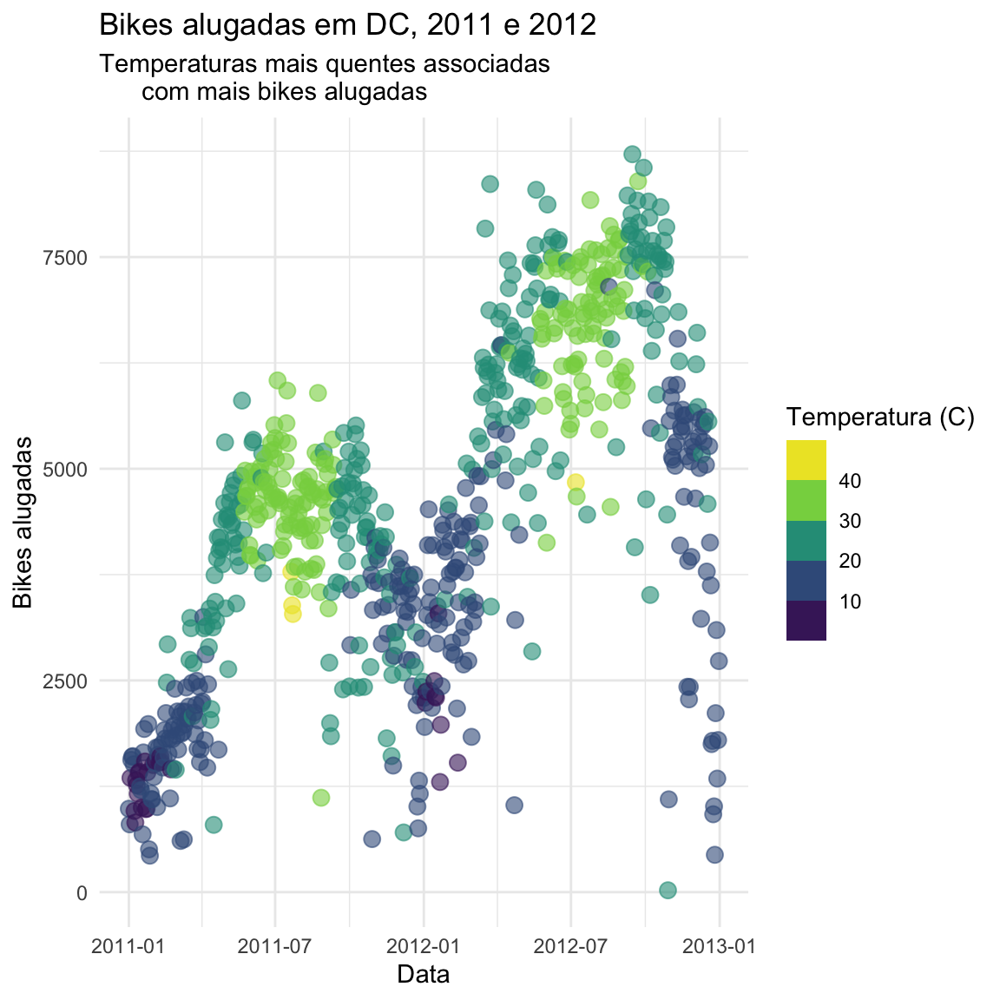
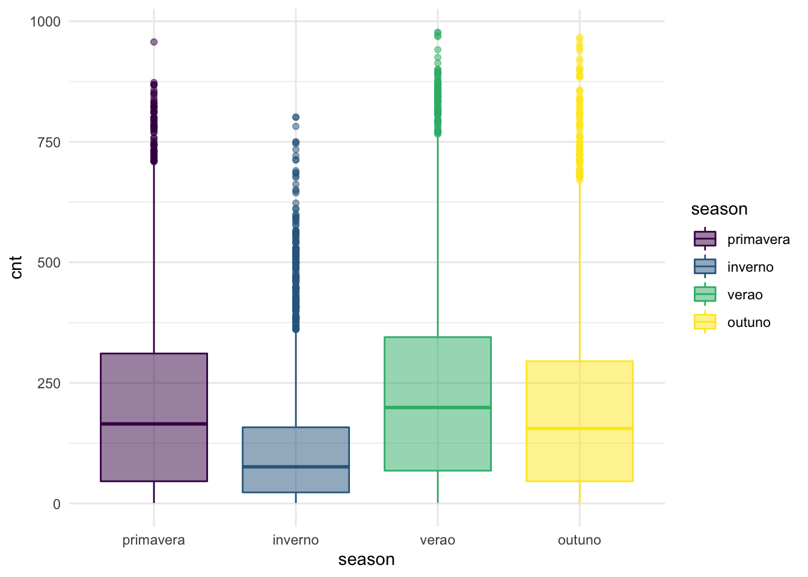

Tarefa 3 - Machine Learning em R
Métodos Supervisionados de Regressão

Photo by Fabio Fistarol on Unsplash
Nesta terceira tarefa usaremos um dataset relacionado com o serviço de aluguel de bikes em DC, EUA, com registros por hora de aluguel de bikes para o período 2011 a 2012.
Sobre o aluguel de bikes em DC, EUA
Os sistemas de compartilhamento de bicicletas são a nova geração de sistemas tradicionais de aluguel de bicicletas onde todo o processo de adesão, aluguel e retorno se tornou automático. Através destes sistemas, o usuário é capaz de alugar facilmente uma bicicleta de uma determinada posição e retornar em outra posição. Atualmente, existem cerca de 500 programas de compartilhamento de bicicletas em todo o mundo, que é composto de mais de 500 mil bicicletas. Hoje, existe um grande interesse nestes sistemas devido ao seu importante papel em questões de tráfego, meio ambiente e saúde.
Além das aplicações interessantes no mundo real dos sistemas de aluguel de bicicletas, as características dos dados gerados por estes sistemas os tornam atraentes para a pesquisa. Ao contrário de outros serviços de transporte, como ônibus ou metrô, a duração da viagem, posição de partida e chegada é explicitamente registrada nestes sistemas. Esta característica transforma o sistema de compartilhamento de bicicletas em uma rede virtual de sensores que pode ser usada para a detecção da mobilidade na cidade. Portanto, espera-se que a maioria dos eventos importantes na cidade possam ser detectados através do monitoramento destes dados.
Fonte: UCI Machine Learning Repository - Bike Sharing Dataset
Dados
Os dados incluem contagens por hora do aluguel de bicicletas (por membros e usuários casuais) da “Capital Bikeshare” em Washington, DC entre 2011 e 2012, bem como informações meteorológicas sobre esses dias.
Você pode baixar os dados (aqui)[https://archive.ics.uci.edu/ml/machine-learning-databases/00275/Bike-Sharing-Dataset.zip]
As fontes de dados originais se encontram em: http://capitalbikeshare.com/system-data e http://www.freemeteo.com.
O dataset chama-se hour.csv. A descrição de cada uma das
variáveis pode ser encontrada no arquivo de ajuda do dataset, que pode
ser acessado executando ?dcbikeshare em seu Console.
Exercícios
Recodificar a variável
seasonpara um fator com nomes mais significativos para cada nível, recodificando a “primavera” (spring) como categoria base (considerando que winter = 1, spring = 2, summer = 3 e fall = 4).Recodificar as variáveis binárias
holidayeworkingdaypara serem fatores com níveisno(0) eyes(1), comnocomo categoria base.Recodificar a variável
yrpara ser um fator com níveis \(2011\) e \(2012\), com \(2011\) como categoria base.Recodifique a variável
weathersitparafactor: 1 -claro, 2 -névoa, 3 -precip leve, e 4 -precip pesada, comclarocomo categoria base.As colunas temperatura (
temp), sensação térmica (atemp), umidade (hum) e velocidade do vento (windspeed) estão normalizadas (0-1). Crie novas variáveis para cada uma, calculando os valores brutos.
- temp: para converter a graus Celsius multiplique por 41 (valor máximo)
- atemp: idem anterior, multiplique por 50 (valor máximo)
- hum: multiplique por 100 (valor máximo)
- windspeed: multiplique por 67 (valor máximo)
Recodifique a variavel
weekdayparafactor: 1: 2a-f, 2: 3a-f, 3: 4a-f, 4: 5a-f, 5: 6a-f, 6: sabado, 7: domingo, com2a-fcomo categoria base.Recodifique as variáveis
hrparafactorcom 24 níveis (de 0 a 23) emnthparafactorcom 12 níveis (janeiro a dezembro).Recrie a seguinte visualização, e interprete-a no contexto dos dados. Dica: Você precisará usar uma das variáveis que você criou acima. A temperatura plotada é a
sensação térmica. Antes de realizar o gráfico verifique que o tipo da variáveldtedaydeve serDatee nãochr

- Recrie a visualização abaixo, mostrando a relação entre o aluguel de
bicicletas e a estação do ano (
season). Interprete-a no contexto dos dados.

Separe o dataset em dois grupos, treinamento e teste, sendo a proporção 75 e 25 respectivamente, use obrigatoriamente o
tidymodels(escoha quais atributos irá usar e quais não e justifique suas escolhas).Crie um objeto de validação cruzada, com k=10 usando
tidymodels, mostre o código. Use este objeto para todas as questões a seguir.Ajuste um modelo linear prevendo o total de aluguéis de bicicletas a partir dos atributos presentes no dataset. Calcule o \(R^2\), o \(RMSE\) e o \(MAE\).
Ajuste um modelo de árvore de decisão prevendo o total de aluguéis de bicicletas a partir dos atributos presentes no dataset. Calcule o \(R^2\), o \(RMSE\) e o \(MAE\).
Utilize o algoritmo Random Forests para prever o total de aluguéis de bicicletas a partir dos atributos presentes no dataset. Calcule o \(R^2\), o \(RMSE\) e o \(MAE\).
Qual dos três modelos foi melhor? dica: compare os \(R^2\), os \(RMSE\) e os \(MAE\) usando uma tabela.
Use o melhor modelo para calcular o \(R^2\), o \(RMSE\) e o \(MAE\) no dataset de teste. Grafique o total de aluguéis (
cnt) no eixo \(x\) e o valor estimado no eixo \(y\).
Sobre a Forma de Avaliação
Seguindo a cultura de competições de machine learning, a avaliação desta tarefa seguirá o formato de competição.
A escolha de atributos que devem compor um modelo de machine learning define, de certa forma, a qualidade das previsões. Neste sentido, a nota final da tarefa será ponderada de acordo ao ranking de melhores previsões, a partir da média aritmética entre as notas individuais de cada indicador no dataset de teste - da questão 16 - (\(R^2\), o \(RMSE\) e o \(MAE\)) e organizada por percentis:
| Percentil | Nota |
|---|---|
| 75 a 100 | 10 |
| 50 a 74 | 9 |
| abaixo de 49 | 8 |
| fez apenas as questões 1 a 9 (cada uma delas vale 0,4) | 0 a 3,6 |
Obs: a entrega parcial das questões 10 a 16 não será pontuada.